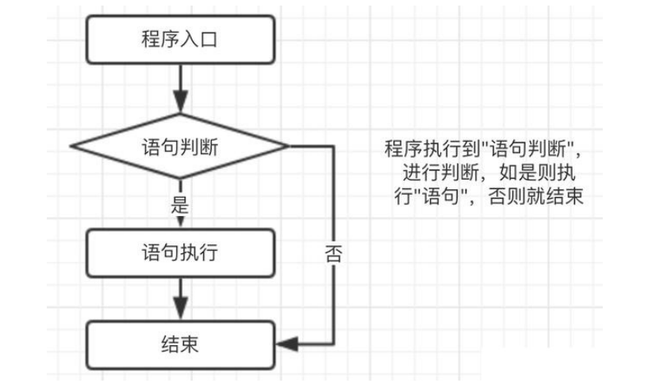
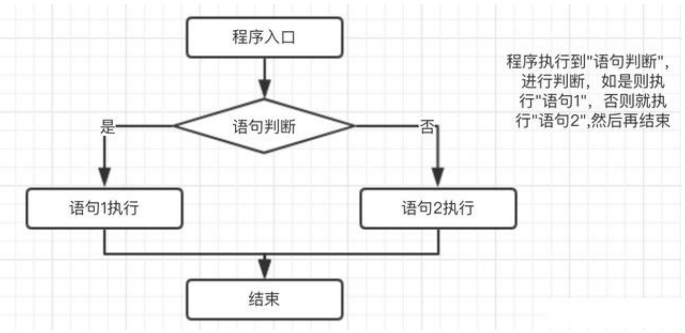
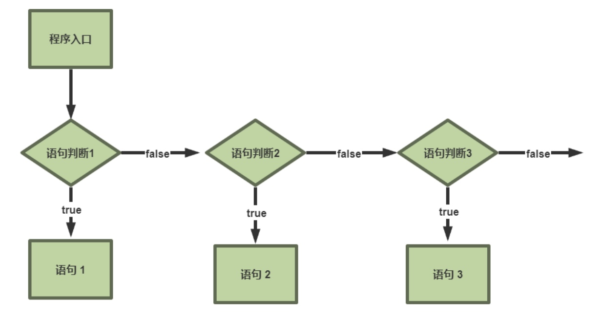
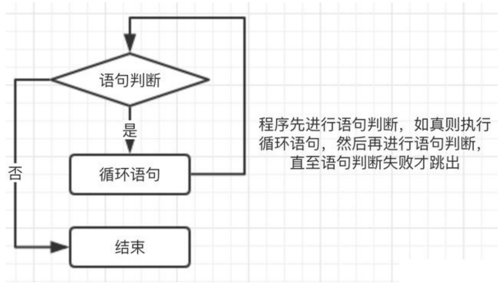

Linux学习笔记 shell脚本基本结构 shell脚本编程：是基于过程式、解释执行的语言
编程语言的基本结构：
各种系统命令的组合
数据存储：变量、数组
表达式：a + b
控制语句：if
shell脚本：包含一些命令或声明，并符合一定格式的文本文件
格式要求：首行shebang机制
#!/bin/bash #!/usr/bin/python #!/usr/bin/perl #!/usr/bin/ruby #!/usr/bin/lua
shell脚本创建过程 第一步：使用文本编辑器来创建文本文件
第一行必须包括shell声明序列：#!
添加注释,注释以#开头
第二步：加执行权限
给予执行权限，在命令行上指定脚本的绝对或相对路径
第三步：运行脚本
直接运行解释器，将脚本作为解释器程序的参数运行
shell 脚本注释规范 1、第一行一般为调用使用的语言
2、程序名，避免更改文件名为无法找到正确的文件
3、版本号
4、更改后的时间
5、作者相关信息
6、该程序的作用，及注意事项
7、最后是各版本的更新简要说明
第一个shell脚本 1 2 3 4 5 6 7 8 9 10 11 12 13 14 15 16 17 18 19 20 21 22 23 24 25 26 27 28 29 30 31 32 [root@instance -j4y73zvl scripts]# vim hello.sh #!/bin/bash "Hello World!" #执行方法一： @instance -j4y73zvl scripts]# bash hello.sh #执行方法二： @instance -j4y73zvl scripts]# cat hello.sh | bash #执行方法三： @instance -j4y73zvl scripts]# bash < hello.sh #执行方法四： @instance -j4y73zvl scripts]# ./hello.sh @instance -j4y73zvl scripts]# chmod +x hello.sh @instance -j4y73zvl scripts]# ./hello.sh #执行方法五： @instance -j4y73zvl scripts]# yum install httpd @instance -j4y73zvl scripts]# systemctl start httpd @instance -j4y73zvl scripts]# cp hello.sh /var/www/html @instance -j4y73zvl scripts]# curl -s http://127.0.0.1/hello.sh | bash
使用read命令来接受输入 使用read来把输入值分配给一个或多个shell变量，read从标准输入中读取值，给每个单词分配一个变
量，所有剩余单词都被分配给最后
1 2 3 4 5 6 7 8 9 -p 指定要显示的提示n N 指定输入的字符长度N t N TIMEOUT为N 秒
范例：
1 2 3 4 5 6 [root@instance-j4y73zvl ~]"请输入你的考试成绩" SCORE$SCORE =~ ^100 |([0 -9 ]{1 ,2 })$ ]] || { echo "请输入你的合法成绩！" ;exit ; }$SCORE -ge 60 ] && echo "PASS" || echo "FAILD"
范例：
1 2 3 4 5 6 7 8 [root@instance-j4y73zvl ~]# vim yesorno.sh "Do you agree? yes or no: " ANSWER ANSWER =~ ^([Yy ][Ee ][Ss ]|[Yy ]|[Nn ][Oo ]?)$ ]] && echo "valid ANSWER" || echo "invalid Answer"
1 2 3 4 5 6 "Do you agree? yes or no: " ANSWER$ANSWER =~ ^([Yy][Ee][Ss]|[Yy])$ ]] && { echo "YES" ;exit ; }$ANSWER =~ ^([Nn][Oo])$ ]] && { echo "NO" ;exit ; }
[root@instance-j4y73zvl ~]# vim work_menu.sh
1 2 3 4 5 6 7 8 9 10 11 12 13 14 15 16 17 18 19 #!/bin/bash echo -en "\E[$[RANDOM%7+31];1m" cat <<EOF 请选择： 1）备份数据库 2）清理日志 3）软件升级 4）软件回滚 5）删库跑路 EOF echo -en '\E[0m' read -p "请选择上面项对应的数字1-5: " MENU$MENU -eq 1 ] && ./backup.sh$MENU -eq 2 ] && action "清理日志" $MENU -eq 3 ] && action "软件升级" $MENU -eq 4 ] && action "软件回滚" $MENU -eq 5 ] && action "删库跑路"
bash shell的配置文件 按照生效范围划分两类 全局配置：针对所有用户皆有效
1 2 3 4 5 /etc/ profile/etc/ profile.d/*.sh/etc/ bashrc
个人配置：只针对特定用户有效
1 2 3 ~/.bash_profile
shell登录两种方式分类 交互式登录
直接通过终端输入账号密码登录
使用 su - UserName 切换的用户
配置文件生效和执行顺序：
1 2 3 4 5 6 7 8 9 10 11 12 13 14 15 16 17 18 19 20 21 22 23 24 25 26 27 /etc/ profile/etc/ profile.d/*.sh/etc/ bashrc/etc/ bashrc/etc/ profile.d/*.sh/etc/ bashrc/etc/ profile/etc/ bashrc
注意：文件之间的调用关系，写在同一个文件的不同位置，将影响文件的执行顺序
非交互式登录
su UserName
图形界面下打开的终端
执行脚本
任何其它的bash实例
执行顺序
1 2 3 4 5 /etc/ profile.d/*.sh/etc/ bashrc
按功能划分分类 profifile类和bashrc类
profile类 profile类交互时登录的shell提供配置
1 2 3 全局：/etc/ profile, /etc/ profile.d/*.sh
功用：
(1) 用于定义环境变量
(2) 运行命令或脚本
bashrc类 bashrc类：为非交互式和交互式登录的shell提供配置
1 2 3 全局：/etc/ bashrc
功用：
(1) 定义命令别名和函数
(2) 定义本地变量
编辑配置文件生效 修改profile和bashrc文件后需生效的两种方式：
修改profifile和bashrc文件后需生效两种方法:
重新启动shell进程
source|. 配置文件
注意:source 会在当前shell中执行脚本,所有一般只用于执行置文件,或在脚本中调用另一个脚本的场景
Bash 退出任务 保存在~/.bash_logout文件中（用户）,在退出登录shell时运行
功能：
练习
1 2 3 4 5 6 7 8 9 10 11 12 13 14 1 、让所有用户的PATH环境变量的值多出一个路径，例如：/usr/ local/apache/ bin 2 、用户 root 登录时，将命令指示符变成红色，并自动启用如下别名：/etc/ sysconfifig/network-scripts/ ’ /etc/ sysconfifig/network-scripts/i fcfg-eth0’ /etc/ sysconfifig/network-scripts/i fcfg-eno16777736 或 ifcfg-ens33 ’ (如果系统是CentOS7) 3 、任意用户登录系统时，显示红色字体的警示提醒信息“Hi,dangerous！” 4 、编写生成脚本基本格式的脚本，包括作者，联系方式，版本，时间，描述等
流程控制 条件选择 条件判断分绍 单分支条件

多分支条件


选择执行 if 语句 格式：
1 2 3 if COMMANDS; then COMMANDS; [ elif COMMANDS; then COMMANDS; ]... [ else fi
单分支
1 2 3 4 5 if 判断条件;then
双分支
1 2 3 4 5 6 7 8 9 if 判断条件; then else fi
多分支
1 2 3 4 5 6 7 8 9 10 11 12 13 14 15 16 17 18 19 if 判断条件1; then elif 判断条件2; then elif 判断条件3; then else fi
说明：
多个条件时，逐个条件进行判断，第一次遇为“真”条件时，执行其分支，而后结束整个if语句 **if 语句可嵌套
1 2 3 [root@instance-j4y73zvl ~]# age =20; if [ $age -gt 18 ] ; then echo "work hard" ;fiage =16; if [ $age -gt 18 ] ; then echo "work hard" ;fi
范例：
1 2 3 4 5 6 7 8 9 10 11 12 13 14 15 16 17 18 19 20 21 22 23 24 [root@instance-j4y73zvl ~]"请输入你的考试成绩" SCORE$SCORE =~ ^100 |([0 -9 ]{1 ,2 })$ ]] || { echo "请输入你的合法成绩！" ;exit ; }if [ $SCORE -lt 60 ] ;then"Failed" $SCORE -lt 80 ]; then"just soso" else "Excellent" 70 90 40
范例：身体质量指数 (BMI）
1 2 3 4 5 6 7 8 9 10 11 12 13 14 15 16 17 18 19 20 21 22 23 24 25 26 27 28 29 30 [root@instance-j4y73zvl ~]"请输入身高(m为单位): " HIGHif [[ ! "$HIGH" =~ ^[0 -2 ](\.[0 -9 ]{,2 })?$ ]];then"输入错误的身高!" exit 1 "请输入体重(kg为单位): " WEIGHTif [[ ! "$WEIGHT" =~ ^[0 -9 ]{1 ,3 }$ ]];then echo "输入错误的体重!" ; exit 2 ; fi$WEIGHT /$HIGH ^2 |bc`if [ $BMI -le 18 ] ;then"太瘦了,多吃点!" $BMI -lt 24 ] ;then"身材很棒!" else "太胖了,注意节食,加强运动!" 1.85 80 170 1.7 80
1 2 3 4 5 6 7 8 9 10 11 12 13 14 15 [root@instance-j4y73zvl ~]if [ $ID = "rocky" -o $ID = "centos" ];then echo os version is rocky or centoselif [ $ID = "ubuntu" ];then echo OS version is Ubuntuelse echo "不支持OS" fi
条件判断 case 语句 1 2 3 4 5 6 7 8 9 10 11 12 13 14 15 16 17 18 19 20 21 22 23 case WORD in [PATTERN [| PATTERN]...) COMMANDS 1 )1 2 )2
case支持glob风格的通配符：
1 2 3 4 5 6 7 * 任意长度任意字符[] 指定范围内的任意单个字符a |b
1 2 3 4 5 6 7 8 9 10 11 12 13 14 15 16 17 18 19 20 21 22 23 24 25 26 27 28 29 30 [root@instance-j4y73zvl ~]echo -en "\E[$[RANDOM%7+31];1m" cat <<EOF 请选择： 1）备份数据库 2）清理日志 3）软件升级 4）软件回滚 5）删库跑路 EOF echo -en '\E[0m' read -p "请输入上面数字1-5: " MENUcase $MENU in echo "执行备份数据库" echo "清理日志" echo "软件升级" echo "软件回滚" echo "删库跑路"
练习
1 2 3 4 5 6 7 8 9 1 、编写脚本 createuser.sh ，实现如下功能：使用一个用户名做为参数，如果指定参数的用户存在，就显示其存在，否则添加之。并设置初始密码为123456 ，显示添加的用户的id号等信息，在此新用户第一次登录时，会提示用户立即改密码，如果没有参数，就提示：请输入用户名2 、编写脚本 yesorno.sh ，提示用户输入yes或no ,并判断用户输入的是yes还是no ,或是其它信息3 、编写脚本 fifiletype.sh ，判断用户输入文件路径，显示其文件类型（普通，目录，链接，其它文件类型）4 、编写脚本 checkint.sh ，判断用户输入的参数是否为正整数5 、编写脚本 reset.sh ，实现系统安装后的初始化环境，包括：1 、别名 2 、环境变量，如PS1等 3 、安装常用软件包，如：tree 5 、实现固定的IP的设置，6 、vim 的设置等
循环 循环执行介绍 将某代码段重复运行多次，通常有进入循环的条件和退出循环的条件
重复运行次数
常见的循环的命令：for, while, until

循环 for 格式1
1 2 3 4 5 6 7 8 9 10 11 12 13 14 15 16 17 18 19 for NAME [in WORDS ... ] ; do COMMANDS; done for 变量名 in 列表;do done for 变量名 in 列表do done
执行机制：
依次将列表中的元素赋值给“变量名”; 每次赋值后即执行一次循环体; 直到列表中的元素耗尽，循环
结束
如果省略 [in WORDS … ] ，此时使用位置参数变量 in “$@”
for 循环列表生成方式：
1 2 3 {start..end }$(seq [start [step ]] end )
使用glob，如：*.sh
变量引用，如：$@，$*，$#
范例：面试题，计算1+2+3+…+100 的结果
1 2 3 4 5 6 7 8 9 [root@instance-j4y73zvl ~]# sum =0 ;for i in {1. .100 };do let sum +=i;done;echo sum =$sum sum =5050 100 |bc 5050 1. .100 }|tr ' ' +|bc 5050 100 |paste -sd +|bc 5050
1 2 3 4 5 6 7 8 9 10 11 12 13 14 15 16 17 18 19 20 [root@instance-j4y73zvl ~]# vim 9x9.shfor j in {1.. 9};do for i in `seq $j `;do "${i} x${j} =$[i*j]\t\c" 1x1 =11x2 =2 2x2 =41x3 =3 2x3 =6 3x3 =91x4 =4 2x4 =8 3x4 =12 4x4 =161x5 =5 2x5 =10 3x5 =15 4x5 =20 5x5 =251x6 =6 2x6 =12 3x6 =18 4x6 =24 5x6 =30 6x6 =361x7 =7 2x7 =14 3x7 =21 4x7 =28 5x7 =35 6x7 =42 7x7 =491x8 =8 2x8 =16 3x8 =24 4x8 =32 5x8 =40 6x8 =48 7x8 =56 8x8 =641x9 =9 2x9 =18 3x9 =27 4x9 =36 5x9 =45 6x9 =54 7x9 =63 8x9 =72 9x9 =81